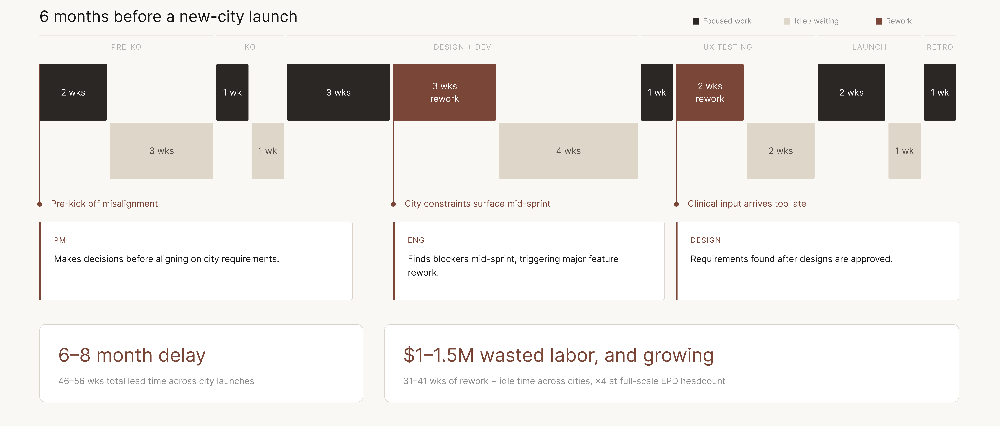
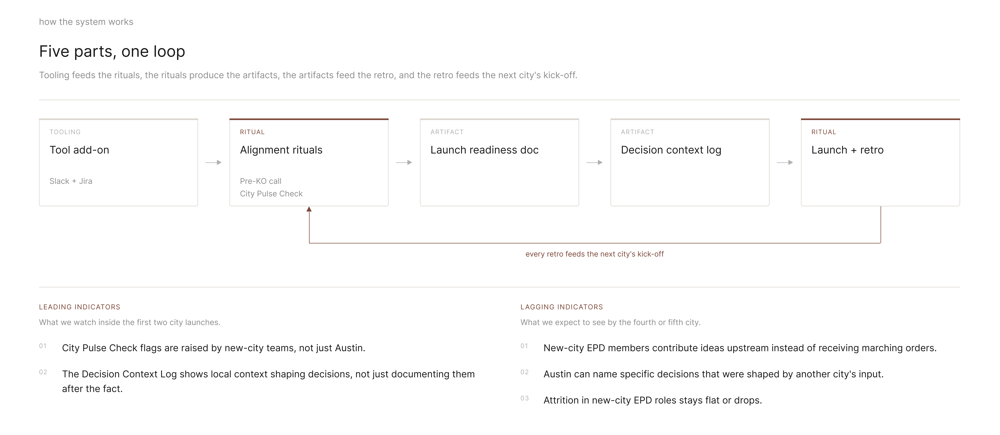
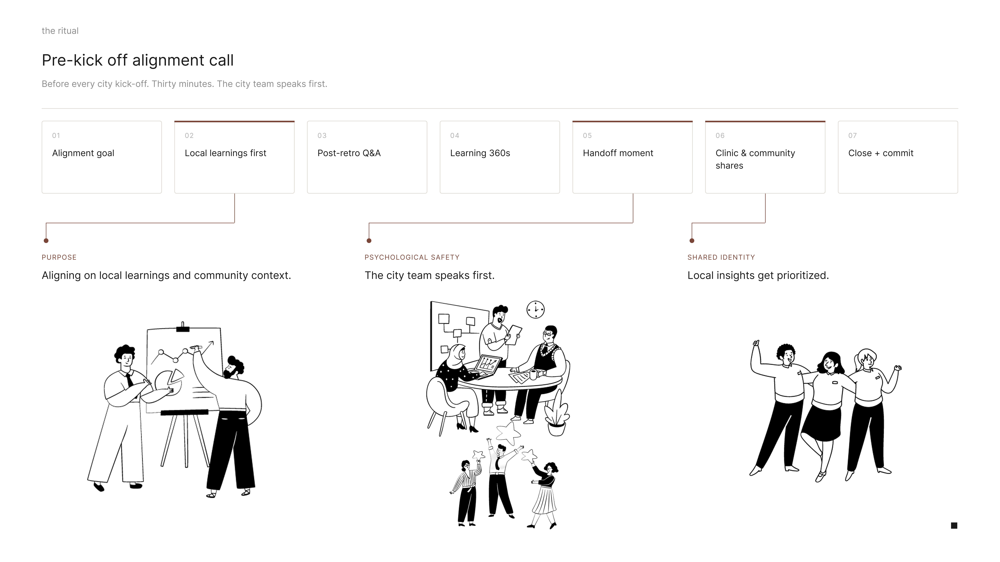
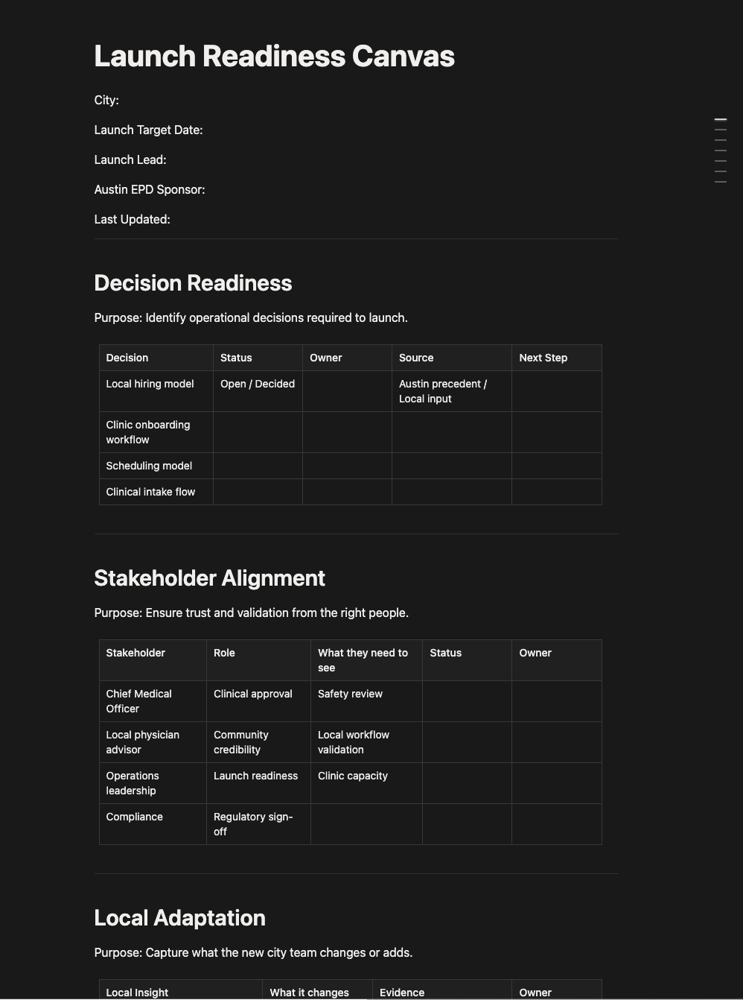

Overview
Twelve weeks on one question: how do engineering, product and design actually work together, and where does that break down? We invented a company to test it on. Solace Health is a women’s healthcare startup expanding out of Austin, and every new city multiplies the number of handoffs between the three disciplines. What we designed isn’t the product. It’s the collaboration system around it, from pre-kickoff to launch: the ritual that starts a city, the framework that holds the decisions, and the tool that keeps all three disciplines looking at the same thing in between.
Invent a company, then design how its engineers, PMs and designers work together.
Where does a launch actually break, and can you catch it before it costs anyone six months?
That was the brief, and the open middle of it was the point.
The one hard constraint was that the problem couldn’t be invented alongside the company. We had to go to working engineers, product managers and designers, ask what breaks in their collaboration, and design against what they told us. It ends in a working prototype and usability results rather than a diagram of a process.
We picked women’s healthcare and built Solace Health around the hardest version of the problem we could give ourselves: not one team in one office, but a team scaling into cities it has never worked in.
Solace Health is a women’s healthcare startup expanding from Austin across five cities. Growth exposed a structural problem: every city has different regulations, demographics and clinical needs, and Austin’s core team was making product decisions in isolation.
Six months before a new-city launch, three critical breakdowns were already in motion. The PM drafts roadmaps without cross-city input. Engineering hits architectural conflicts mid-sprint. Design discovers city-specific requirements after designs are already approved.
The result: 6 to 8 month launch delays and $1.5M+ in wasted labor on rework alone. None of it was anyone’s fault, which is exactly what makes it a structural problem rather than a people problem.

Click to see it closer
The problem was never too few messages.
We surveyed and interviewed 13 engineers, product managers and designers across companies including Meta, Netflix, TikTok, Indeed, Walmart and SAP. The synthesis surfaced a tension that reframed the whole brief: everyone is drowning in communication and starving for context. Not one of those messages carried what a decision actually needed.
Decisions happen without the people closest to the problem. The tools aren’t broken; the gaps between them are. No tool bridged the space between disciplines, forcing teams to rely on meetings and tribal knowledge to stay aligned.
Alignment needs a moment, a place to live, and something keeping it alive in between.
Teri is a designer on the Chicago expansion. Early in the sprint she catches an assumption that doesn’t hold in this market. Under the old way, that flag gets buried, the sprint ships, and the wrong assumption goes with it. Here, she flags it where she’s already working, it surfaces in the weekly async, and if it needs a decision it routes to the alignment call. The decision lands in the Decision Context Log, documented rather than lost. The log feeds the retro. The learnings shape the next cycle.
That’s the point. Not to eliminate the hard decisions, but to catch misalignment early, before it compounds.

Click any figure in this section to see it closer


A structured 60-minute call before every city launch. The local PM presents first: local context, clinical constraints, demographic insights. Austin listens before it leads, and that ordering is the whole design. A weekly async City Pulse Check keeps alignment alive between calls.
Every section of the Launch Readiness Canvas has a named owner. The Canvas captures decisions and local adaptations during weekly calls. The Decision Context Log persists across launches so the next city inherits it, and it’s required reading before any new PRD.
A lightweight plugin connecting Jira, Slack and Notion. In Jira, a side panel gives sprint visibility with active blockers and team health. In Slack, it generates a dedicated channel per ticket. The AI Health Summary suggests actions without deciding for you.
People didn’t reject AI assistance. They rejected AI that gave them no reason to trust it.
Two rounds of usability testing with EPD professionals. The most telling finding was about posture rather than features, and every change we made afterwards moved the system from acting to proposing.
What we found
- Isolated signal labels didn’t communicate meaning
- AI recommendations felt coercive and forced
- Time zone and availability weren’t considered in automated scheduling
- Auto-scheduling was universally rejected
What we changed
- Moved the AI Health Summary into the Sprint Ticket Panel instead of a dedicated pop-up
- Two recommendation options instead of one, so the choice stays with the person
- Consolidated the interface and cut what wasn’t earning its place
- Added dark mode
How we’d know it worked.
None of this ran for real, so these are the signals we would watch rather than results we got. Three of them, ordered from the easiest to count to the hardest.
Speed
- Rework time cut in half by the third city launch
- 40% less wasted labor by the fifth city
- Teams shipping at the same pace regardless of city
Credibility
- Every project has named owners before work begins
- No mid-sprint surprises that send teams back to square one
- Stakeholders aligned before anything is drafted
Belonging
- New city teams raising issues early, not after the fact
- Local input shapes at least one decision per launch
- Teams saying “we” rather than “they”
What this one changed about how I work
This project changed how I think about what designers can, and should, design. Working at the systems level meant designing rituals, decision flows and knowledge structures instead of screens.
Psychological safety isn’t something you hope for
The Pre-Kickoff Alignment Call puts the local PM first so Austin listens before it leads. The City Pulse Check makes flags visible without anyone having to interrupt a meeting. The Decision Context Log means a designer can see what happened to her flag without asking. Mechanisms, not principles.
“We” instead of “they” was the metric I cared most about
We measured speed and credibility because they’re countable. The signal that actually mattered was whether local teams described the product as theirs. Hardest to measure, most important, and I’d still choose it.
Team culture is the design work
How people collaborate, who speaks first, who owns what, where knowledge lives, decides whether the product succeeds more than any interface decision does.
You can design the conditions for trust, not trust itself
Testing kept pointing at agency rather than features. The system had to support a decision without making it, and that shaped the tool more than any requirement did.